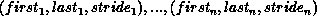
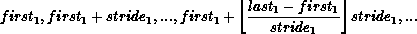
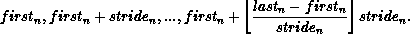

Group constructors are used to subset and superset existing groups. These constructors construct new groups from existing groups. These are local operations, and distinct groups may be defined on different processes; a process may also define a group that does not include itself. Consistent definitions are required when groups are used as arguments in communicator-building functions. MPI does not provide a mechanism to build a group from scratch, but only from other, previously defined groups. The base group, upon which all other groups are defined, is the group associated with the initial communicator MPI_COMM_WORLD (accessible through the function MPI_COMM_GROUP).
[] Rationale.
In what follows, there is no group duplication function analogous to
MPI_COMM_DUP, defined later in this chapter. There is no need for
a group duplicator. A group, once created, can have several references to it
by making copies of the handle. The following constructors address the need
for subsets and supersets of existing groups.
( End of rationale.)
[] Advice
to implementors.
Each group constructor behaves as if it returned a new group object.
When this new group is a copy of an existing group, then
one can avoid creating such new objects, using
a reference-count mechanism.
( End of advice to implementors.)
MPI_COMM_GROUP(comm, group)
[ IN comm] communicator (handle)
[ OUT group] group corresponding to comm (handle)
int MPI_Comm_group(MPI_Comm comm, MPI_Group *group)
MPI_COMM_GROUP(COMM, GROUP, IERROR)
INTEGER COMM, GROUP, IERROR
MPI_COMM_GROUP returns in group a handle to the group of comm.
MPI_GROUP_UNION(group1, group2, newgroup)
[ IN group1] first group (handle)
[ IN group2] second group (handle)
[ OUT newgroup] union group (handle)
int MPI_Group_union(MPI_Group group1, MPI_Group group2, MPI_Group *newgroup)
MPI_GROUP_UNION(GROUP1, GROUP2, NEWGROUP, IERROR)
INTEGER GROUP1, GROUP2, NEWGROUP, IERROR
MPI_GROUP_INTERSECTION(group1, group2, newgroup)
[ IN group1] first group (handle)
[ IN group2] second group (handle)
[ OUT newgroup] intersection group (handle)
int MPI_Group_intersection(MPI_Group group1, MPI_Group group2, MPI_Group *newgroup)
MPI_GROUP_INTERSECTION(GROUP1, GROUP2, NEWGROUP, IERROR)
INTEGER GROUP1, GROUP2, NEWGROUP, IERROR
MPI_GROUP_DIFFERENCE(group1, group2, newgroup)
[ IN group1] first group (handle)
[ IN group2] second group (handle)
[ OUT newgroup] difference group (handle)
int MPI_Group_difference(MPI_Group group1, MPI_Group group2, MPI_Group *newgroup)
MPI_GROUP_DIFFERENCE(GROUP1, GROUP2, NEWGROUP, IERROR)
INTEGER GROUP1, GROUP2, NEWGROUP, IERROR
The set-like operations are defined as follows:
The new group can be empty, that is, equal to MPI_GROUP_EMPTY.
MPI_GROUP_INCL(group, n, ranks, newgroup)
[ IN group] group (handle)
[ IN n] number of elements in array ranks (and size of newgroup) (integer)
[ IN ranks] ranks of processes in group to appear in newgroup (array of integers)
[ OUT newgroup] new group derived from above, in the order defined by ranks (handle)
int MPI_Group_incl(MPI_Group group, int n, int *ranks, MPI_Group *newgroup)
MPI_GROUP_INCL(GROUP, N, RANKS, NEWGROUP, IERROR)
INTEGER GROUP, N, RANKS(*), NEWGROUP, IERROR
The function MPI_GROUP_INCL creates a group newgroup that consists of the n processes in group with ranks rank[0], , rank[n-1]; the process with rank i in newgroup is the process with rank ranks[i] in group. Each of the n elements of ranks must be a valid rank in group and all elements must be distinct, or else the program is erroneous. If n~=~0, then newgroup is MPI_GROUP_EMPTY. This function can, for instance, be used to reorder the elements of a group. See also MPI_GROUP_COMPARE.
MPI_GROUP_EXCL(group, n, ranks, newgroup)
[ IN group] group (handle)
[ IN n] number of elements in array ranks (integer)
[ IN ranks] array of integer ranks in group not to appear in newgroup
[ OUT newgroup] new group derived from above, preserving the order defined by group (handle)
int MPI_Group_excl(MPI_Group group, int n, int *ranks, MPI_Group *newgroup)
MPI_GROUP_EXCL(GROUP, N, RANKS, NEWGROUP, IERROR)
INTEGER GROUP, N, RANKS(*), NEWGROUP, IERROR
The function MPI_GROUP_EXCL creates a group of processes
newgroup that is obtained by deleting from group
those processes with ranks
ranks[0] , ranks[n-1].
The ordering of processes in newgroup is identical to the ordering
in group.
Each of the n elements of ranks must be a valid
rank in group and all elements must be distinct; otherwise, the
program is erroneous.
If n~=~0, then newgroup is identical to group.
ranks[n-1].
The ordering of processes in newgroup is identical to the ordering
in group.
Each of the n elements of ranks must be a valid
rank in group and all elements must be distinct; otherwise, the
program is erroneous.
If n~=~0, then newgroup is identical to group.
MPI_GROUP_RANGE_INCL(group, n, ranges, newgroup)
[ IN group] group (handle)
[ IN n] number of triplets in array ranges (integer)
[ IN ranges] an array of integer triplets, of the
form (first rank, last rank, stride) indicating ranks in
group of processes to be included in newgroup
[ OUT newgroup] new group derived from above, in the
order defined by ranges (handle)
int MPI_Group_range_incl(MPI_Group group, int n, int ranges[][3], MPI_Group *newgroup)
MPI_GROUP_RANGE_INCL(GROUP, N, RANGES, NEWGROUP, IERROR)
INTEGER GROUP, N, RANGES(3,*), NEWGROUP, IERROR
If ranges consist of the triplets

then newgroup consists of the sequence of processes in group with ranks


Each computed rank must be a valid rank in group and all computed ranks must be distinct, or else the program is erroneous. Note that we may have firsti > lasti, and stridei may be negative, but cannot be zero.
The functionality of this routine is specified to be equivalent to expanding the array of ranges to an array of the included ranks and passing the resulting array of ranks and other arguments to MPI_GROUP_INCL. A call to MPI_GROUP_INCL is equivalent to a call to MPI_GROUP_RANGE_INCL with each rank i in ranks replaced by the triplet (i,i,1) in the argument ranges.
MPI_GROUP_RANGE_EXCL(group, n, ranges, newgroup)
[ IN group] group (handle)
[ IN n] number of elements in array ranks (integer)
[ IN ranges] a one-dimensional
array of integer triplets of the
form (first rank, last rank, stride), indicating the ranks in
group of processes to be excluded
from the output group newgroup.
[ OUT newgroup] new group derived from above, preserving the
order in group (handle)
int MPI_Group_range_excl(MPI_Group group, int n, int ranges[][3], MPI_Group *newgroup)
MPI_GROUP_RANGE_EXCL(GROUP, N, RANGES, NEWGROUP, IERROR)
INTEGER GROUP, N, RANGES(3,*), NEWGROUP, IERROR
Each computed rank must be a valid rank in group and all computed ranks must be distinct, or else the program is erroneous.
The functionality of this routine is specified to be equivalent to expanding the array of ranges to an array of the excluded ranks and passing the resulting array of ranks and other arguments to MPI_GROUP_EXCL. A call to MPI_GROUP_EXCL is equivalent to a call to MPI_GROUP_RANGE_EXCL with each rank i in ranks replaced by the triplet (i,i,1) in the argument ranges.
[] Advice to users.
The range operations do not explicitly enumerate ranks, and therefore
are more scalable if implemented efficiently. Hence, we recommend MPI programmers
to use them whenenever possible, as high-quality implementations will
take advantage of this fact.
( End of advice to users.)
[] Advice
to implementors.
The range operations should be implemented, if possible, without
enumerating the group members,
in order to obtain better scalability (time and space).
( End of advice to implementors.)